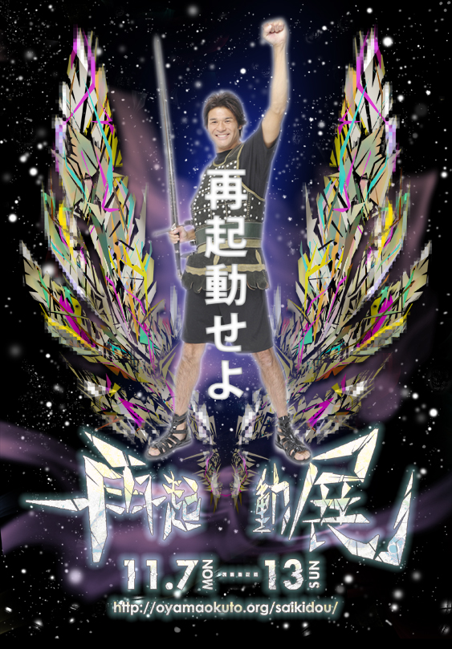

今日ようやく再起動展行きました！再起動するためのエネルギーをもらいました。でもねでもね、自分はおっくんの絵は自由帳みるのがやっぱり一番好きだな。 #再起動展
— こんだくたぁさん (@konkontarou) 11月 12, 2011いやぁ、大山さんの作品すごかった。絵の中に引き込まれる。なんか流れ込んできた感じがした。そんな再起動展は図書館でやってるよ!! #再起動展
— ペチンさん (@petin_glycogen) 11月 10, 2011@yamanoku 芸美一年生かつ軽音一年生で、日本画の道を志している者です。再起動展、とても刺激を受けました！デジタルの無機質な線が、画面上を蠢いている様子が生き物の骨格のようで、見惚れました。お話できなかったのが残念です。また機会がありましたらお話したいです(^-^)
— ねちさん (@nechi_310) 11月 12, 2011
終わりとしての
再起動
@yamanoku 僕も火曜、展示見に行きました。個人的に印象に残ったのは曖昧企画の時の力強いライブアートと灰色の背景に水円を一時崩壊させてるようで本質は淡々と在るアンニュイな感じのが好きでした。
— じゅんやさん (@Junyasam）11月 10, 2011
#再起動照英 twitter.com/yamanoku/st…
— 大山陸奥（ｵｵﾔﾏﾐﾁﾉｸ）さん (@yamanoku) 11月 10, 2011